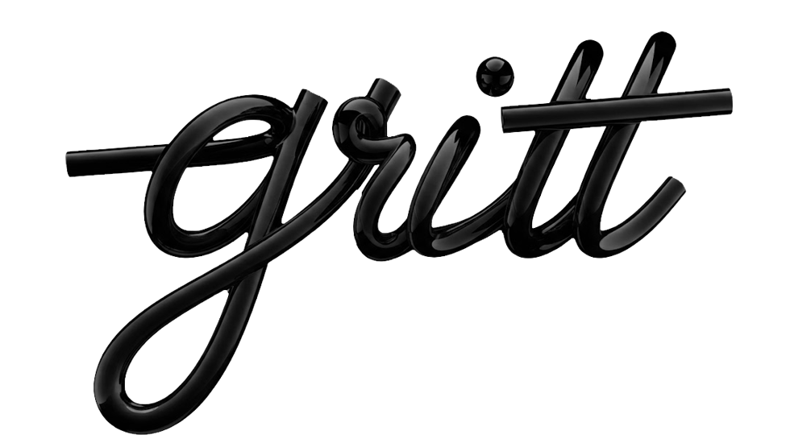
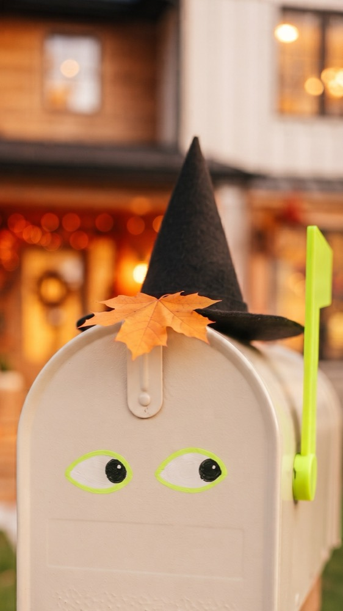
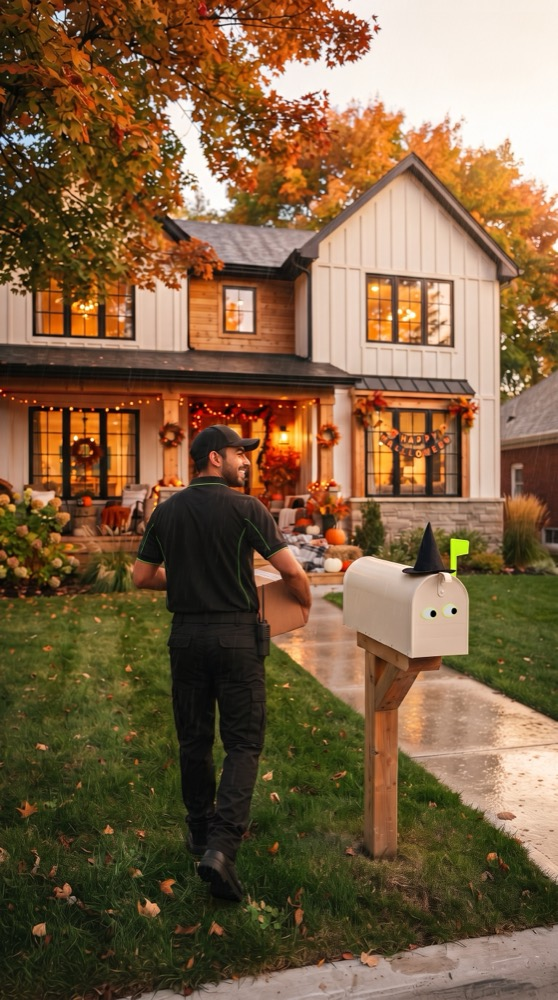
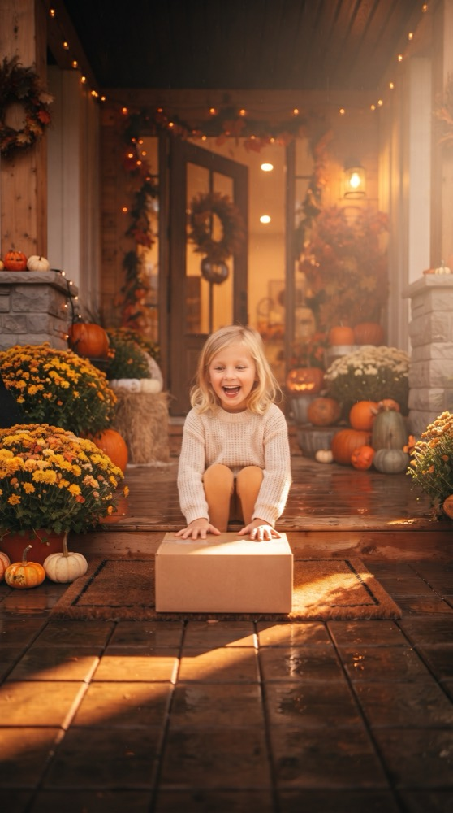

01 · Personajes
Un buzón con personalidad
Escribimos la idea y creamos personajes propios para la marca. El buzón se volvió el protagonista de la campaña de Halloween.

LabContenido para redes de una marca de envíos internacionales: personajes propios, escenas con IA y una parrilla semanal que el equipo de LANZ aprueba en minutos.
Un video vertical para redes donde el buzón de la casa se vuelve el protagonista. Escribimos la idea, creamos el personaje y las escenas con IA, y lo editamos con voz y música.



Una marca de envíos tiene poco que mostrar: cajas, guías y mensajeros. El contenido tenía que darle personalidad, salir cada semana y pasar por aprobación sin semanas de ida y vuelta.
Escribimos la idea y creamos personajes propios para la marca. El buzón se volvió el protagonista de la campaña de Halloween.
Generamos las escenas con IA bajo dirección de arte humana, editamos el video y lo bajamos a piezas para la parrilla.
Personajes, escenas y fondos quedan en un banco que se reutiliza mes a mes. Cada nueva campaña arranca con material listo.
Parrilla semanal con piezas fijas y video, que el equipo de LANZ revisa y aprueba en minutos. Y un informe de lo que funcionó para ajustar la siguiente.
Partimos de la fecha o el mensaje de la semana.
Personajes y escenas del banco, con dirección de arte.
Video vertical y piezas fijas para la parrilla.
LANZ aprueba; medimos y ajustamos la siguiente semana.
Contenido semanal con personajes propios, hecho con IA y aprobado sin fricción.